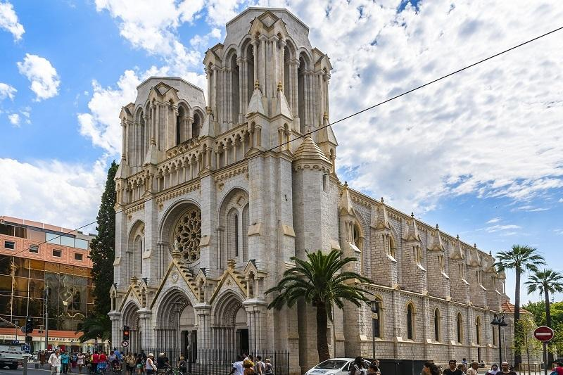
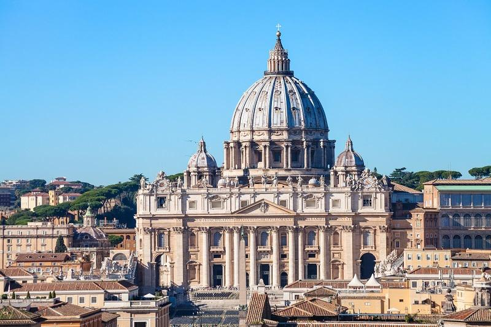
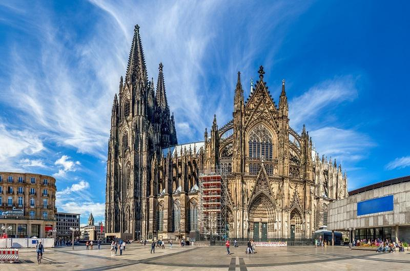
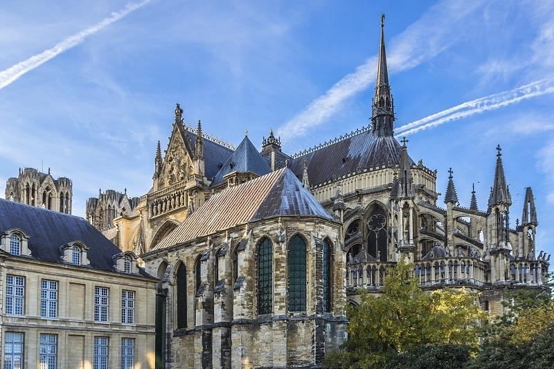
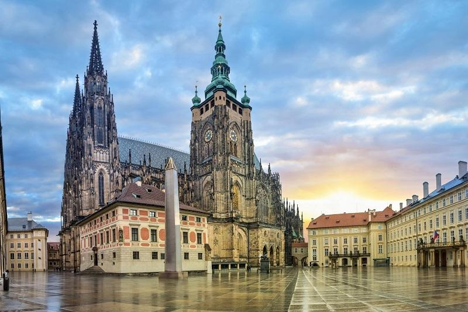
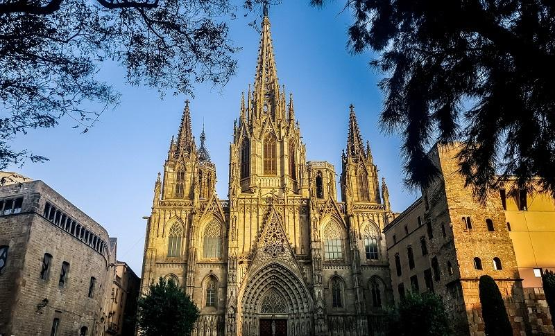

Базилика Нотр-Дам-де-Нис, Франция
This large church in Nice, whose construction began in the distant 1864, is called a small copy of Notre Dame Cathedral. The snow-white building with golden trim, decorated in neo-Gothic style with square towers 65 meters high, lancet arches and rose-coverage, looks very impressive and applicable. Inside the restored basilica, which has excellent acoustics, individual stained-glass windows made by the best French masters of the 19th century, copies of Bartolome Murillo's "Holy Family" paintings and statues of the Virgin Mary located in the chapel deserve specialattention
St. Peter's Cathedral, Italy
Эта одна из самых почитаемых святынь и самый популярный объект посещения не только паломников, но и туристов, представляет собой центр римской католической религии и является вторым по величине христианским храмом в мире. Здание, в строительстве которого в течение многих столетий принимали участие самые выдающиеся архитекторы, находится на Площади Святого Петра в Ватикане, поэтому если вы планируете поездку в Рим, то обязательно посетите эту достопримечательность. Сам собор потрясает своими масштабами, внутри, например, его длина равна 186 метров, высота в центральном нефе - 45 метров, а с куполом - все 119 метров. Внутреннее убранство однозначно заслуживает того, чтобы рассматривать часами каждую деталь и элемент декора. Так, например, на красной порфировой плите Главного портала, где раньше находился алтарь, папа Лев III в Рождество 800 г. возложил корону римского императора на голову Карла Великого, в первой капелле правого бокового нефа до сих пор хранится великое творение Микеланджело (скульптурная группа «Пьета», созданная по просьбе французского кардинала Жана Билэра де Лагрола), а у четвертого столба справа можно найти потрясающую бронзовую статую сидящего св. Петра (XIII в.), правая ступня которого отполирована поцелуями верующих.
Кельнский собор, Германия
Этот третий в мире по величине готический кафедральный собор, высота которого достигает 157 метров в высоту, является настоящим символом Кельна. Несмотря на то, что официальное его название Кафедральный собор во имя Св. Петра и Св. Девы Марии, однако местные жители и туристы именуют его просто как Кельнский собор. Великолепное сооружение, где находится кафедра архиепископа Кельнского было включено в Список Всемирного наследия ЮНЕСКО в 1996 году. На сегодняшний день собор может похвастаться невероятным внутренним убранством, также выдержанном в готическом стиле. Там имеется два кресла, одно из которых предназначено для Папы, а второе - для императора, которые никто не может занимать во время службы. Золотой саркофаг, рака Трех королей, хранит мощи трех волхвов, принесших дары новорожденному Иисусу Христу в Вифлеем, тоже являются популярными не только среди паломников, но и среди туристов, ежегодно приезжающих в Кельн, чтобы увидеть это великолепие своими глазами.
Реймсский собор, Франция
Эффектный готический собор в Реймсе, строительство которого началось в 1211 году, является одним из самых известных не только во Франции, но и за ее пределами. Со времен раннего Средневековья и до XIX века — это сооружение было местом коронации практически всех французских монархов, в годы Первой мировой войны он серьезно пострадал, а после был восстановлен, но утратил часть оригинальных витражей и скульптур. Сейчас фасады собора украшают 2303 статуи, среди которых наиболее известной является так называемый «улыбающийся ангел», ставший одним из символов города. В 1991 году этот яркий образец готической архитектуры и символ важнейших событий европейской истории включили в список всемирного наследия ЮНЕСКО.
Собор Святого Вита, Чехия
Храм, украшающий исторический центр чешской столицы, с уверенностью можно назвать одним из самых знаменитых долгостроев Европы. Работу над проектом начал известный фламандский архитектор Маттиас из Арраса, затем, после его смерти, процесс перешел к немецкому специалисту Петеру Парлержу, которому принадлежит также Карлов Мост и церковь Всех Святых в столице. Однако и он не успел до конца осуществить задуманное, а закончил только часть трансепта и хор. Его сыновья достроили южную сторону храма и часть башни. В XV – XVI веках работу продолжили архитекторы Б. Рейт и Б. Вольмут, а закончили строительство лишь в начале XX века. Тех, кто впервые увидел это великолепие, завораживает средневековая готика, органично сочетающаяся с элементами барокко и искусными неоготическими стилизациями.
Собор Святого Стефана, Австрия

На месте этого самого знаменитого готического здания Вены и символа города сначала находилась простая романская базилика, построенная в 1147 г. Сооружение сильно пострадало сначала во время турецкой осады в 1683 году, а затем и в последние дни Второй мировой войны и было восстановлено лишь в 1950 году. Примечательно, что в 1782 году именно здесь состоялась свадьба Моцарта, а в декабре 1791 года в этом же храме отпевали великого композитора. Особого внимания заслуживает внутреннее убранство собора - надгробие императора Фридриха III и принца Евгения Савойского, уникальная кафедра работы Антона Пильграма и Венский готический алтарь, созданный в 1447 году. Если вы хотите насладиться впечатляющими видами на Вену и Венский лес, тогда поднимайтесь на северную башню, где, кстати, находится и находится самый большой в мире колокол Пуммерин, звон которого можно услышать лишь в новогоднюю ночь.
Кафедральный собор Барселоны (Собор Святого Креста и Святой Евлалии), Испания
Величественное здание с эффектным шпилем, сооруженное в XIV—XV вв, расположено в Готическом квартале Барселоны. Удивительно, но до 1298 г., когда сюда пришла готика, здесь находились романская церковь, мечеть и римская базилика. Особого внимания заслуживает фасад, церкви и внутреннее убранство. Чего только стоит искусна резьба, ренессансные рельефы из жизни Св. Евлалии, выполненными по эскизам Бартоломе Ордоньеса, а также сводчатая готическая галерея кафедрального собора, куда можно попасть из Каррер-дель-Бистре через ворота Санта-Эулалии.